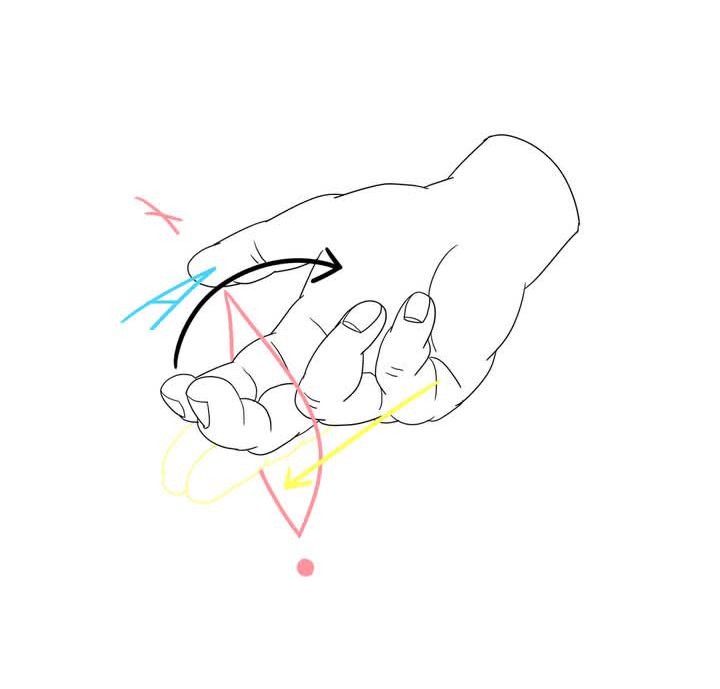
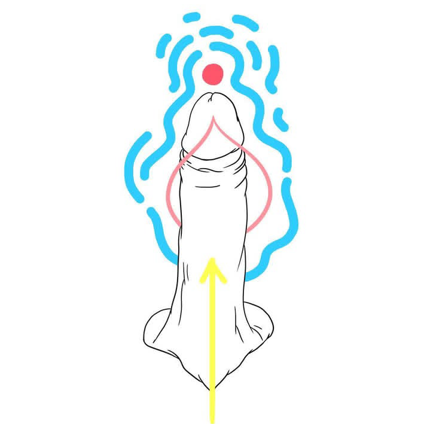
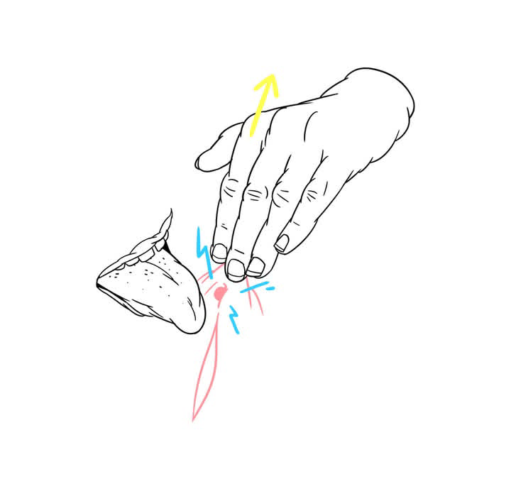
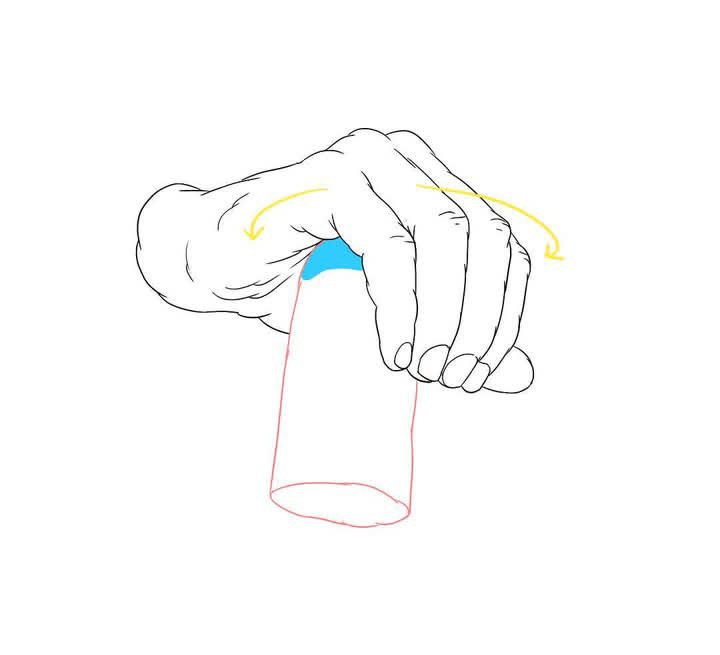
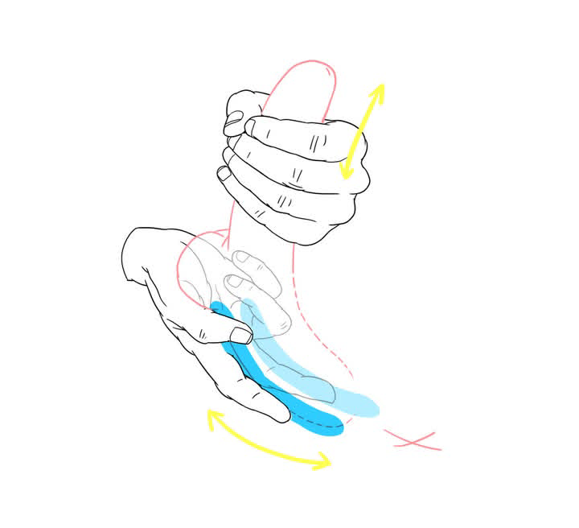
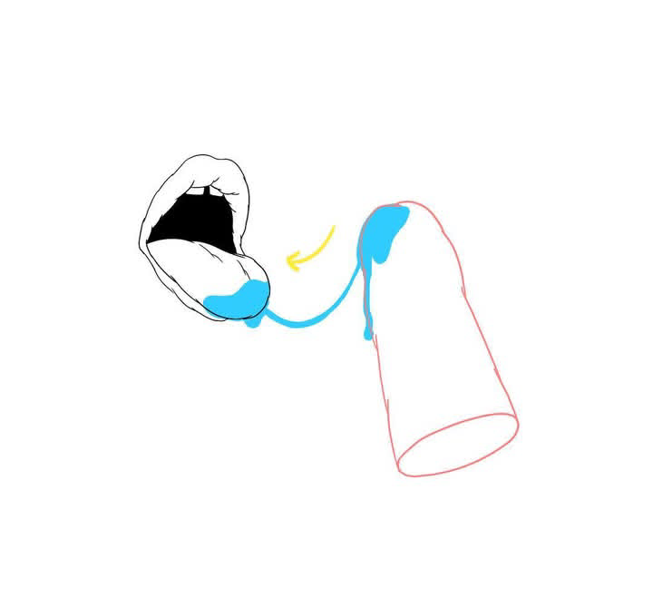

On y parle anatomie, mécanique, lâcher prise, zones de plaisir, etc... On y retrouve évidemment les Tips de cette page et plus encore ! C’est pour les chattes, les bites, ou entre les deux. Tout ça Sur fond de SEXE, de R’n’B, et d’humour.
Zone de Plaisir - Mécanique - Lacher Prise

Ça parait compliqué mais en fait c’est EA-SY. Bidule est sur le ventre ou à quatre pattes. Commence par insérer tes doigts normalement. Une fois dedans, forme un crochet et aide toi de la force de ton avant bras pour faire comme si tu essayais de soulever bidule. Pendant que tu «soulèves» tu peux donner des petits à-coups verticaux. Relâche et recommence... Tu vas sentir une paroi souple et fine, c’est celle qui sépare le vagin du rectum. C’est par là que se trouve le point À. N’hésite pas à parler avec ta/ton partenaire pour savoir si elle/il veut que tu y ailles plus fort ou plus doucement. La sensation n’a rien à voir avec une pénétration lambda et je ne suis pas sûre que qu’un pénis puisse un jour faire cet effet là. A part peut être un pénis anormalement recourbé à 90°.

AHALALALA !!! La Pénétration Post Orgasme Clitoridien… En clair, fais jouir machine (clitoridienne) ou attends qu’elle le fasse et….BIM! 💥T’attends pas que ça redescende, tu la/le pénètres DI-RECT ! (Avec sa permission bien entendu…)🌹 C’est un truc de malade...

Pendant un bon cuni, il est important d’alterner les mouvements et leur vitesse. Voilà une idée qui peut plaire à Bidule : Place ta main sur la partie basse du mont de Vénus et tu tires la peau vers le haut. L’idée est de faire sortir de sa cachette le gland du clitoris. Ça intensifie le plaisir et en plus t’auras l’air d’un/e pro. Bon, si le clito ne sort pas, ne tire pas comme un/e Bourrin/e. C’est un geste qui peut faire mal à certaines personnes alors je ne le répéterai jamais assez mais CO-MMU-NIQUEZ
Lacher Prise - Mécanique - Zone de Plaisir

Branler c’est ok, mais branler comme un pro c’est mieux. Alors voilà, pendant ta branlette, tu peux remonter de temps à autres sur le gland avec la paume de ta main toute entière et faire des mouvements circulaires, un peu comme si tu étais bartender et que tu essuyais un verre en forme de bite. 🙃 En douceur et bien lubrifié, tu peux maintenant retourner à ta branlette...🍌

On continue sur le massage du bulbe avec un mouvement que si t'es pas doté d'une bonne coordination, tu risques de pas y arriver. Donc ta première main donne une branlette somme toute banale à machine. Sur la deuxième main, l'index et le majeur sont écartés comme sur l'image et font des vas-et-viens en massant les côtés du bulbe , puis remontent jusqu'à la base des couilles. Ce massage peut être fait de manière très douce mais j'ai ouïe dire que pour en apprécier pleinement les effets, la pression devait être assez forte.

Pas besoin de faire des gorges profondes pour faire kiffer Bidule. Parfois il suffit juste de jouer avec ta salive: Cracher, regarder couler... Revenir, et enfin emporter avec toi un filet de bave en le/la regardant dans les yeux...👀 . Un petit conseil avant de te lancer dans ce délire: Évite de manger des biscuits secs, du carton ou du sable